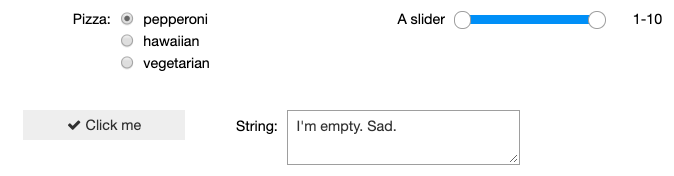
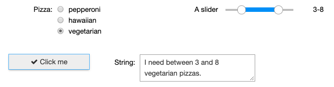

Widgets
Introduction
No matter what you do in data science, you need data! Arghhh!
You have to:
- find it
- describe it
- load it
- explore it,
and then you can start engineering and doing cool science. In this first blog 🎉 I will introduce a simple data filtering notebook that is interactive. A big part of the interactivity are Jupyter ipywidgets which allows GUI interaction with the IPYTHON kernel.
A tiny widget
Here is a widget:
import ipywidgets as widgets
widgets.SelectionRangeSlider(
options=[i for i in range(1, 11)],
index=(0, 9),
description='A slider',
disabled=False
)
SelectionRangeSlider(description='A slider', index=(0, 9), options=(1, 2, 3, 4, 5, 6, 7, 8, 9, 10), value=(1, …

Let's break this down:
SelectionRangeSlider
Is one type of widget. There are also:
- Progress bars
- Text boxes
- Toggle buttons
- Checkboxes
- etc.
For most widgets there are minimum set of parameters:
options=[i for i in range(1, 11)],
index=(0, 9),
description='A slider',
disabled=False
In the case of a range slider, "options" provides the widget with range of values it can display. "index" is an integer tuple of numbers that specifies the minimum and maximum index for your options. "description" is text to display beside the slider. "disabled" indicates if the widget should be shown.
Combining widgets
Widgets can contain widgets. Nifty. These are called container widgets and help arrange their child widgets on the page. They can be formatted horizontally with an "HBox" widget or vertically with "VBox". HBoxes and Vboxes can contain each other, so its possible to make an N x M table of widgets. The possibilities are endless!!!
Let's have a look.
# widgets for the first row
right_widget_1 = widgets.SelectionRangeSlider(
options=[i for i in range(1, 11)],
index=(0, 9),
description='A slider',
disabled=False
)
left_widget_1 = widgets.RadioButtons(
options=['pepperoni', 'hawaiian', 'vegetarian'],
description='Pizza:',
disabled=False
)
# widgets for the second row
right_widget_2 = widgets.Textarea(
value="I'm empty. Sad.",
placeholder='Type something',
description='String:',
disabled=False
)
left_widget_2 = widgets.Button(
description='Click me',
disabled=False,
button_style='',
tooltip='Click me',
icon='check'
)
# make two rows of widgets
widget_row_1 = widgets.HBox([left_widget_1, right_widget_1])
widget_row_2 = widgets.HBox([left_widget_2, right_widget_2])
# create a list for our rows
widget_rows = []
# add the rows
widget_rows.append(widget_row_1)
widget_rows.append(widget_row_2)
# now arrange the rows vertically (stack them)
display(widgets.VBox(widget_rows))
VBox(children=(HBox(children=(RadioButtons(description='Pizza:', options=('pepperoni', 'hawaiian', 'vegetarian…

Woah. Let's review.
Our widgets are layed out as a two-by-two grid:
- Radio buttons and a slider are on the first row, and
- a check box and text box are on the second row.
Awesome
Accessing widgets...
Individual widgets are accessed by index. There are two row widgets, widget_rows[0, 1], and each row has children, children[0, 1] which corresponds to the left and right widgets respectively. So thinking about this as a grid:
widget_rows[0].children[0] widget_rows[0].children[1]
widget_rows[1].children[0] widget_rows[1].children[1]
...and their values
Most widgets have a value property. In the case of a radio button it is the index of the selected item, for a slider it is a list of two values, the minimum and maximum.
[lower, upper] = widget_rows[0].children[1].value
print(f'The slider range is {lower} to {upper}.')
The slider range is 1 to 10.
Eventful.
Each widget creates events, when the user interacts with the widget. When a button is clicked, an event is generated. To make the event meaningful, it must be bound to a function that does something else.
# create a function to be bound to the button
# don't know why the 'b' is required...
def update_order(b):
# what kind of pizza has been order?
pizza = widget_rows[0].children[0].value
# how many might be ordered
min_quantity, max_quantity = widget_rows[0].children[1].value
# create the order text
order = f"I need between {min_quantity} and {max_quantity} {pizza} pizzas."
# update the text area which is on the 2nd row and right position: row 1 and child 1
widget_rows[1].children[1].value = order
# bind the button (which is on the 2nd row, left column: row 1 and child 0)
# 'on_click' event to the function 'update_order'
widget_rows[1].children[0].on_click(update_order)

Why all the index nonsense?
Yes, probably more difficult than it needs to be for just four widgets. But the advantage of an iterable set of HBox widgets with multiple children is that each widget can be accessed with loops in an M x N way. No need to code multiple unique widget names, just put them in lists for rows and children.
What's next?
Surprisingly, this is all going somewhere. I wanted to figure out an iterable way of managing widgets so I could 'attach' them to features in a data frame and manipulate the features (mainly filtering).
In my next post, I'll introduce my "Data Digger"